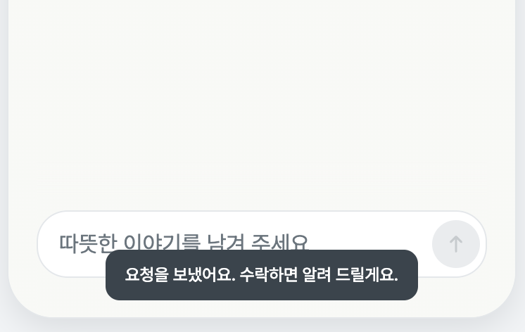
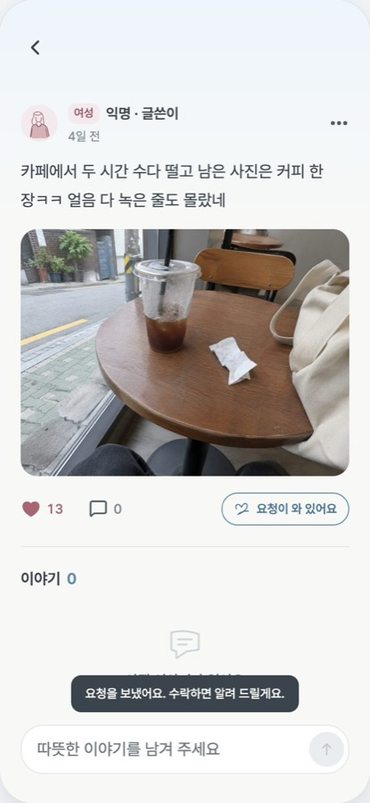
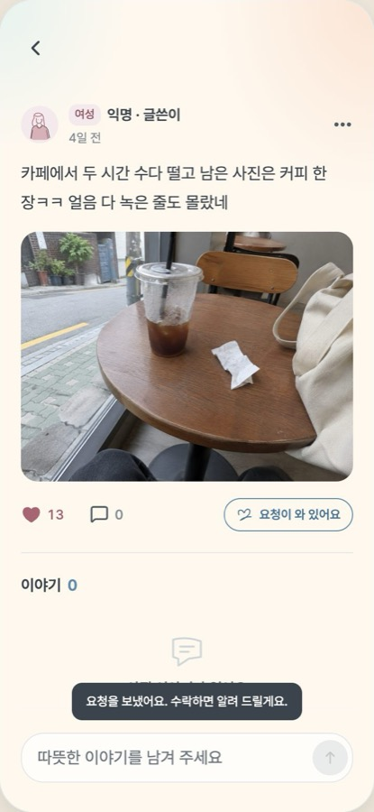

교환 요청 알림 · 이야기 입력칸 위로
글 상세에서 프로필 교환을 요청하면 뜨는 알림이 아래 이야기 입력칸을 가리던 문제예요. 알림을 입력칸 바로 위 12px에 띄우도록 바꿨어요. 아래 “바꾼 뒤”는 앱에 반영한 상태를 실제로 찍은 화면이에요.



원인 · 알림 자리는 화면 아래 고정 영역(하단 메뉴 · 버튼) 위로 맞추는데, 글 상세의 이야기 입력 막대는 스크롤 칸 안에 붙어 있어서 기준에서 빠져 있었어요.
바꾼 것 · 알림 자리 계산이 이야기 입력 막대도 기준에 넣어요. 답글 중 표시가 위에 붙어 있으면 그 위로 올라가요. 편지 보내기 화면에서 고친 방식과 같아요.